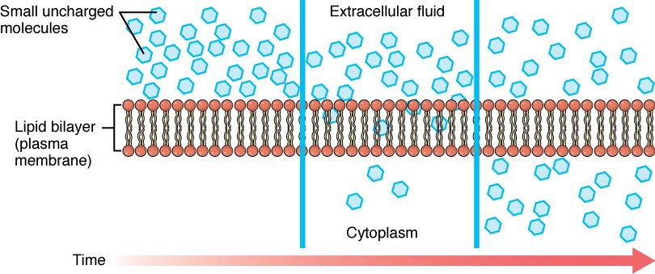
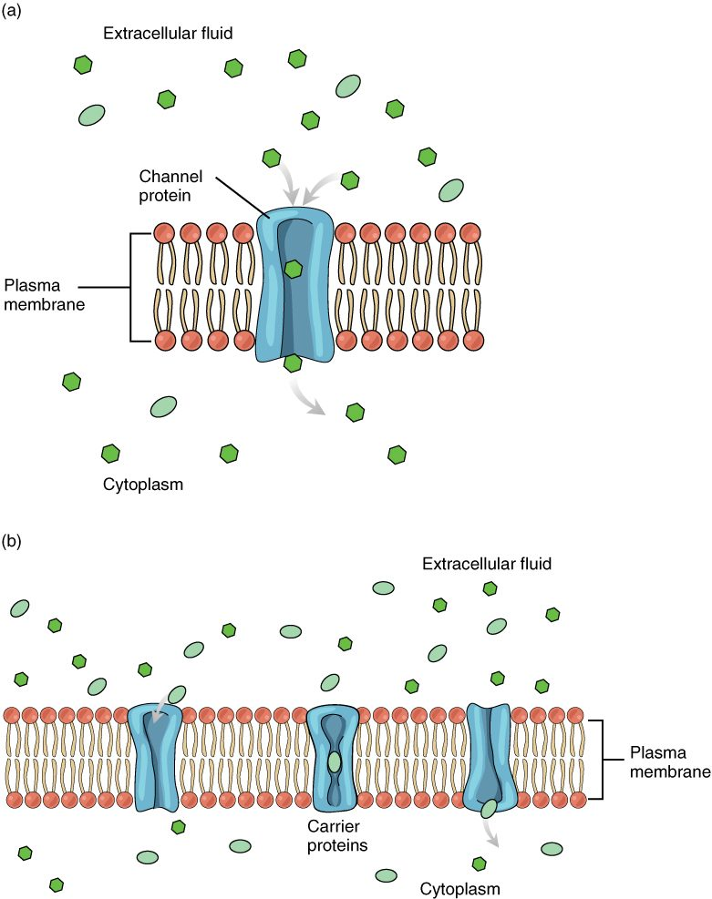
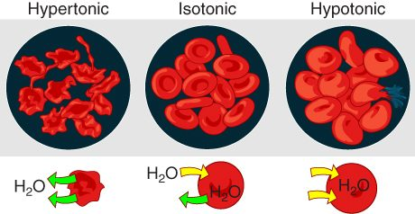

Crossing the membrane without spending ATP
Every second, oxygen moves from your blood into your cells, glucose follows it, and water flows in and out of every cell you own. Your cells spend no ATP on any of this. Each substance simply moves down its own gradient, and the gradient supplies the energy. This page explains passive transport: simple diffusion, the channels and carriers that give ions, water and glucose a way across, osmosis and tonicity, and filtration.
What passive transport means
Start with a cell that has just used up oxygen. The oxygen concentration inside it is now lower than in the interstitial fluid around it. Oxygen molecules are always moving at random. More of them happen to cross from the crowded outside to the sparse inside than cross the other way, so there is a net movement inward. The cell does nothing to make this happen.
That is the general rule. Passive transport (passive = not acting) is any movement of a substance across a membrane down its gradient, powered by the gradient itself, with no ATP spent by the cell. The energy comes from the constant random motion of the molecules. Movement continues until the gradient is gone, when the two sides reach equilibrium and movement in each direction is equal.
You met the key ideas in the diffusion topic. Here you apply them to a real plasma membrane, which is selectively permeable. There are four kinds of passive transport, and the rest of this page takes them one at a time:
- Simple diffusion straight through the bilayer.
- Facilitated diffusion through a membrane protein: an ion channel, an aquaporin or a carrier.
- Osmosis: the net movement of water across the membrane, which decides whether a cell swells or shrinks.
- Filtration: fluid pushed through a barrier by pressure.
Simple diffusion across the membrane
Simple diffusion across the membrane is the movement of a substance straight through the phospholipid bilayer, down its concentration gradient, with no protein involved. It works only for molecules that can dissolve in the oily core: small nonpolar molecules such as oxygen and carbon dioxide, and lipid-like molecules such as steroids and fatty acids (Figure 1).

Here is a concrete case. In your lungs, oxygen's pressure in the air sacs is higher than in the blood arriving from your body. (For a gas moving between air and blood, pressure, not total amount, sets the direction.) Oxygen diffuses across the cells between air and blood, through each plasma membrane in turn. Carbon dioxide diffuses the other way, because its gradient points the other way. No protein is needed for either.
The rate of simple diffusion depends on the same factors you met in the diffusion topic, plus one that belongs to the membrane:
- Lipid solubility. The more easily a molecule dissolves in oil, the faster it crosses. This is one reason alcohol and many lipid-soluble drugs reach your brain cells so easily.
- Size. Small molecules cross faster than large ones.
- The concentration gradient. Double the difference between the two sides and you double the rate.
- Surface area and distance. More membrane area speeds diffusion; a thicker barrier slows it.
Notice the third point. For simple diffusion, the rate keeps rising in step with the gradient. There is no ceiling, because nothing on the membrane can be used up. Hold on to that; carriers behave differently.
Ion channels
Ions cannot dissolve in the oily core, yet sodium, potassium, calcium and chloride ions cross your plasma membranes constantly. They cross through ion channels: integral membrane proteins that form a water-filled tunnel through the bilayer (Figure 2). An ion channel is one kind of channel protein.
Three features define an ion channel:
- It is selective. A narrow stretch of the tunnel, lined with particular amino acids, fits one kind of ion far better than others. A potassium channel lets potassium through thousands of times more easily than sodium, even though a sodium ion is smaller.
- It is fast. An open channel can pass millions of ions per second. Nothing binds tightly inside it; ions stream through in single file.
- It does not choose the direction. Ions move through an open channel down their electrochemical gradient: the combined push of their concentration gradient and the electrical charge difference across the membrane. Open a sodium channel in a typical cell and sodium flows in, because sodium is more concentrated outside and the inside of the cell is negative.

Channels come in two broad kinds. A leak channel (also called a leakage channel) is open most of the time, so it lets its ion trickle across steadily. A gated channel has a part that swings or twists to open and close the tunnel, like a gate. It is closed most of the time and opens only when something triggers it.
What opens a gated channel
Gated channels are sorted by what opens them.
- Voltage-gated channels open when the voltage across the membrane changes. Part of the channel protein carries charges, so it moves when the electrical difference across the membrane changes, and that movement pulls the gate open. These channels carry the fast electrical signals of your brain, your muscles and your heart; later chapters return to them in detail.
- Ligand-gated channels (ligare = to bind) open when a specific molecule binds to a site on the channel. For example, the nerve that controls one of your muscles releases a small molecule onto it; the molecule binds to channels in the muscle cells' membranes, and they open.
- Mechanically gated channels open when the membrane is physically stretched or pressed. The touch-sensing nerve endings in your skin use them, and so do cells in the wall of your bladder that sense how full it is.
| Voltage-gated channel | Ligand-gated channel | Mechanically gated channel | |
|---|---|---|---|
| What opens it | A change in voltage across the membrane | A specific molecule binding to it | Stretch or pressure on the membrane |
| Example | Channels that carry fast electrical signals in brain, muscle and heart | Channels in a muscle cell's membrane that open when a molecule released by its nerve binds | Touch-sensing nerve endings in skin |
| What moves once it opens | Its ion, down its electrochemical gradient | Its ion, down its electrochemical gradient | Its ion, down its electrochemical gradient |
The last row is the one to remember. The trigger decides when a channel opens. The gradient decides which way the ions move.
Aquaporins: water channels
Water is small and has no net charge, so a little of it slips through the bare bilayer. That is far too slow for many cells. A red blood cell that meets a sudden change in the fluid around it, or a kidney cell reclaiming water from forming urine, needs water to cross in a fraction of a second.
These cells use aquaporins (aqua = water, porus = passage), also called water channels: integral membrane proteins that form a narrow tunnel through which water molecules pass in single file. One aquaporin can pass billions of water molecules per second. The tunnel is shaped so that ions, and even hydrogen ions, cannot follow.
An aquaporin does not pump water. It only opens a faster path. Water still moves in whichever direction osmosis pushes it. A cell can change how fast it exchanges water by adding aquaporins to its membrane or removing them; certain kidney cells do exactly this, and the urinary chapter explains how that is controlled.
Facilitated diffusion by carriers
Glucose is too large and too polar to cross the bilayer, and it is too big for any channel. Yet most of your cells take it up constantly, with no ATP spent on moving it. They use carriers.
A carrier protein is an integral membrane protein that binds a specific substance on one side of the membrane, changes shape, and releases it on the other side. It is never open all the way through. Here is one cycle for a glucose carrier:
- The carrier's binding site faces the outside of the cell. A glucose molecule from the interstitial fluid fits into it.
- Binding shifts the carrier into its other shape, so the binding site now faces the cytoplasm.
- Glucose falls off into the cytoplasm, where its concentration is lower.
- The empty carrier flips back to face the outside, ready for the next molecule.
The carrier can run this cycle in either direction. More glucose binds on the side where glucose is more concentrated, so the net movement is down the gradient. That makes this passive transport.
Put channels and carriers together and you have facilitated diffusion (facilis = easy): passive movement of a substance down its gradient through a specific membrane protein, either a channel or a carrier. It is still diffusion. The protein makes a path, but the gradient provides the energy.
How does glucose keep entering, if facilitated diffusion stops when the two sides even out? As soon as glucose enters most cells, an enzyme attaches a phosphate group to it. The phosphorylated molecule is no longer glucose as far as the carrier is concerned, so it does not fit the binding site and cannot leave. The concentration of free glucose inside stays low, and the gradient keeps pointing inward.
Carrier saturation
Carriers have one big limit that simple diffusion does not. Each carrier moves one molecule, or a few, per cycle, and it runs only so many cycles per second. A cell has a set number of carriers in its membrane. Once every carrier is busy, adding more glucose outside cannot speed things up. This is carrier saturation: the point where all the carriers are occupied and the transport rate stops rising. The top rate is the transport maximum.
Worked example: glucose uptake by a cell with a fixed number of carriers.
Step 1. A cell's membrane has enough glucose carriers to move at most 100 units of glucose per minute. That is its transport maximum.
Step 2. Outside glucose is low. Most carriers sit empty, waiting for a molecule to bump into them. The cell takes up 10 units per minute.
Step 3. Double the outside glucose. Twice as many molecules bump into the empty carriers, so uptake almost doubles, to about 18 units per minute. Fewer carriers are empty now.
Step 4. Double the outside glucose again. More of the carriers are busy now, so uptake rises less than twofold, to about 31 units per minute.
Step 5. Raise outside glucose tenfold from there. Most carriers are occupied almost all the time, so a tenfold rise in glucose gives less than a threefold rise in uptake: about 82 units per minute. Further increases only creep closer to the transport maximum of 100 units per minute, and uptake never goes above it.
Conclusion: with carriers, the rate rises with the gradient at first, then levels off. To raise the maximum, the cell must add carriers, not glucose. With simple diffusion, doubling the gradient doubles the rate every time.
Figure 3 shows the two patterns side by side.
Carriers share two more traits that follow from binding:
- Specificity. A glucose carrier binds glucose and a few close relatives, but not amino acids.
- Competition. Two similar molecules that fit the same carrier slow each other's transport, because each occupies carriers the other could have used.
Comparing the three routes
| Simple diffusion | Facilitated diffusion through a channel | Facilitated diffusion by a carrier | |
|---|---|---|---|
| Path across | Straight through the bilayer | A water-filled tunnel through a protein | A protein that binds the solute and changes shape |
| What uses it | Oxygen, carbon dioxide, steroids, fatty acids | Ions (ion channels) and water (aquaporins) | Glucose, amino acids and other larger polar molecules |
| Energy source | The gradient | The gradient | The gradient |
| Direction | Down the concentration gradient | Down the electrochemical gradient | Down the concentration gradient |
| Speed per protein | No protein involved | Very fast: millions of ions per second | Slower: hundreds to a few thousand molecules per second |
| Saturates? | No: the rate rises in step with the gradient | Rarely, in practice | Yes, at the transport maximum |
| Can the cell regulate it? | Not directly | Yes: by gating, or by adding or removing channels | Yes: by adding or removing carriers |
Osmosis and tonicity
Now picture a nurse about to infuse a liter of fluid into a patient's vein. Plasma surrounds the red blood cells, so whatever goes in the bag decides what happens to them. If the fluid is right, the cells stay the same size. If it is wrong, they shrink or swell and burst. Which happens depends on osmosis.
Recall that osmosis is the net movement of water across a semipermeable membrane toward the side with more solute particles that the membrane holds back: water follows solute. Water crosses a plasma membrane easily, through the bilayer and through aquaporins. Many solutes do not. So when the fluid outside a cell changes, water moves in or out until the solute concentration inside matches the outside again, and the cell's volume changes as it does.
Tonicity (ton- = tension, stretching) describes how a solution outside a cell changes that cell's volume. It depends on the solutes that cannot cross the membrane, because only those keep a lasting difference between the two sides. There are three cases (Figure 4):
- Isotonic (iso- = equal): the solution has the same concentration of nonpenetrating solutes as the cell. Water moves in and out equally, and the cell keeps its volume. For red blood cells, 0.9% sodium chloride (normal saline, about 300 mOsm/L) is isotonic.
- Hypotonic (hypo- = under): the solution has fewer nonpenetrating solutes than the cell. Water moves into the cell, which swells. A red blood cell swollen far enough tears open and spills its contents. That is osmotic hemolysis (hemo- = blood, -lysis = breaking apart).
- Hypertonic (hyper- = over): the solution has more nonpenetrating solutes than the cell. Water moves out of the cell, which shrinks. A shrunken red blood cell puckers into a spiky shape; this is crenation (crena = notch).

Worked example: predicting what happens to a red blood cell.
Step 1. Find the cell's starting point. The fluid inside a red blood cell is about 300 mOsm/L, and almost all of those solutes (potassium, proteins, phosphates) cannot cross its membrane.
Step 2. Find the outside solution's nonpenetrating solutes. Take 0.45% sodium chloride, half-strength saline: about 150 mOsm/L. Sodium and chloride are held outside, so all of it counts.
Step 3. Compare. Outside, 150; inside, 300. The inside has more solute particles that cannot leave.
Step 4. Predict water movement. Water moves by osmosis toward the side with more solute: into the cell.
Step 5. Predict the result. The cell swells. The solution is hypotonic to the red blood cell. If it were much weaker still, as with pure water, the cells would swell until they burst: osmotic hemolysis.
Conclusion: compare nonpenetrating solutes on the two sides; water moves toward the side with more; the cell's volume follows the water.
| Isotonic | Hypotonic | Hypertonic | |
|---|---|---|---|
| Nonpenetrating solutes outside, compared with inside | Equal | Fewer | More |
| Net water movement | None | Into the cell | Out of the cell |
| Cell volume | Unchanged | Swells | Shrinks |
| Red blood cell in the extreme case | Normal disc | Bursts (osmotic hemolysis) | Crenation |
| Example for red blood cells | 0.9% sodium chloride | Pure water; 0.45% sodium chloride | 3% sodium chloride |
Tonicity is not the same as osmolarity
Osmolarity counts every solute particle. Tonicity counts only the ones that stay on their side. Usually the two agree, but not always.
Here is the classic test. Glycerol, the small backbone molecule of a fat, crosses red blood cell membranes. Place red blood cells in 300 mOsm/L glycerol. The solution has the same osmolarity as the cells, so you might expect nothing to happen. But glycerol diffuses into the cells, down its gradient. The cells now hold their own solutes plus glycerol, so water follows by osmosis. The cells swell and burst. A 300 mOsm/L glycerol solution is isosmotic (iso- = equal, osm- = pushing; same osmolarity) but hypotonic, because glycerol does not stay outside.
Filtration
Pour coffee through a paper filter. Gravity pushes the liquid through the paper; the grounds stay behind. That is filtration.
In your body, filtration (filtrum = felt, used to strain liquids) is the movement of water and small solutes through a membrane or a thin barrier, pushed by a hydrostatic pressure gradient. Particles too large for the openings stay behind. The push comes from pressure, not from each solute's own concentration gradient, so water and small solutes travel together in bulk flow.
The main examples:
- Capillary walls. Blood pressure inside a capillary pushes water and small solutes out through the narrow gaps between the cells of its wall, into the interstitial fluid. Blood cells and most of the proteins dissolved in plasma are too large, so they stay in the blood. A later topic on capillaries explains the force that opposes this outward push, and how the fluid that leaves gets back to the blood.
- The kidneys. Blood pressure pushes water and small solutes out of the blood through a special filter. That fluid is the starting material for urine.
Filtration counts as passive transport because the cells of the barrier spend no ATP to move the fluid. The energy is stored in the pressure, which the heart built up earlier.
Worked example: how pressure sets the rate of filtration.
Step 1. Recall the flow equation from the gradients topic: flow equals the pressure gradient divided by resistance.
Step 2. Look only at pressure for now; the capillary topic adds the other forces. Suppose the fluid pressure inside a stretch of capillary is 30 mm Hg and the fluid outside is at about 0 mm Hg. The pressure gradient across the wall is 30 mm Hg.
Step 3. Suppose the capillary wall's resistance stays the same, and the pressure inside rises to 45 mm Hg, as it would if the veins draining that capillary were partly blocked. The gradient is now 45 mm Hg.
Step 4. With the same resistance, flow is proportional to the gradient: 45 divided by 30 is 1.5.
Conclusion: counting pressure alone, the rate of filtration out of that capillary rises by half. In a real capillary, proteins held in the blood pull against the push, so the net outward push rises by even more than half; the capillary topic shows why. Either way, fluid builds up in the tissue around it faster, which you would see as swelling.
Putting it together
Passive transport moves substances down their gradients with no ATP spent by the cell. Small nonpolar molecules cross the bilayer by simple diffusion, and their rate rises in step with the gradient. Ions cross through ion channels, which are selective and fast; leak channels stay open, and gated channels open to a voltage change, a binding molecule or a stretch. Water crosses fastest through aquaporins. Glucose and other polar molecules cross on carriers, which saturate at a transport maximum. Water follows nonpenetrating solutes, so the tonicity of the fluid around a cell decides whether it keeps its volume, swells or shrinks. Filtration pushes water and small solutes through a barrier by pressure.